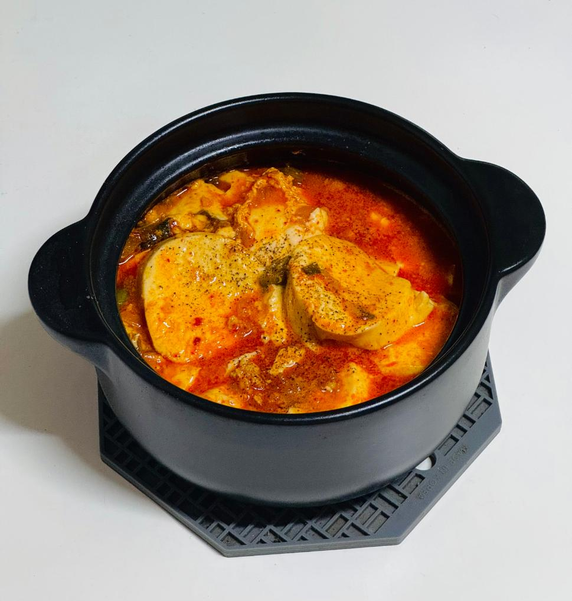

- 순두부찌개 -
부드러움 속에 매콤한 깊이, 따뜻한 한 그릇

📝 재료
- 순두부 - 1개(350g)
- 간 돼지고기 - 30g
- 다진 양파 - 1/2컴
- 대파 - 1/3컵
- 다진 마늘 - 1큰술
- 고춧가루 - 1.5큰술
- 국간장 - 1큰술
- 참기름 - 1큰술
- 식용유 - 2큰술
- 꽃소금 - 1/2작은술
- 황설탕 - 1작은술
- 물 - 2/3컵
- 계란 - 1개
- 후추
🍳 만드는 법
- 참기름과 식용유를 두르고 파를 볶아 파향을 냅니다.
- 파향이 올라오면 돼지고기를 넣고 볶아줍니다.
- 고기가 갈색을 띄기 시작하면 양파를 넣고 함께 볶습니다.
- 양파의 수분이 어느 정도 날아가면 다진 마늘과 꽃소금을 넣고 볶습니다.
- 마지막으로 간장을 넣고 볶아 양념장을 완성합니다.
- 뚝배기에 물, 양념장, 순두부를 넣고 순두부를 살짝 부셔줍니다.
- 국물이 끓기 시작하면 계란을 넣고 익힌 뒤, 고추와 후추로 마무리합니다.
💡 TIP
고춧가루를 넣을 땐 불을 약하게 줄여주세요. 타면 쓴맛이 나요.